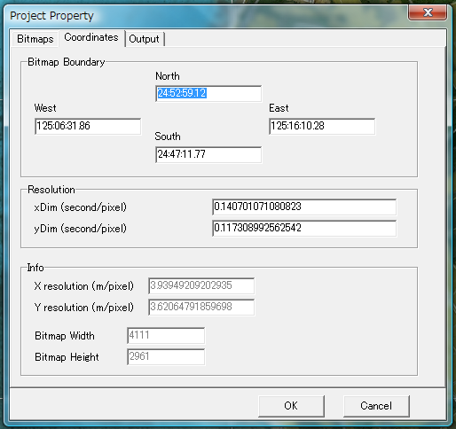

Create project
Select "New" from "File" menu to create new project.
Specify bitmap files
Specify bitmap files at "Bitmaps" tab.

You can specify up to 14 bitmaps.
Select bitmap number with 'Bitmap number' listbox, then specify filename and variation.
- At minimum, prepare only 1 bitmap, then specify 'All' variation.
- If you use day/night/watermask bitmaps, specify day bitmap at #1, night bitmap at #2, and watermask at #3.
Also specify variation parameters. You need to set 'All month' for #1 bitmap.
- You can specify seasonal day bitmaps. In this case, you need to specify month variation parameters for each
day bitmaps.
Specify coordinates parameters
You can specify bitmap area and resolutions at "Coordinates" tab.
You can use "calibration" feature to specify them, so you can ignore this tab at this moment.

Specify output parameters
Select "Output" tab, specify Output Folder. All generated files (BGL files, texture files)
will be stored in this folder.
Then specify Base File Name, which becomes scenery BGL base file name.